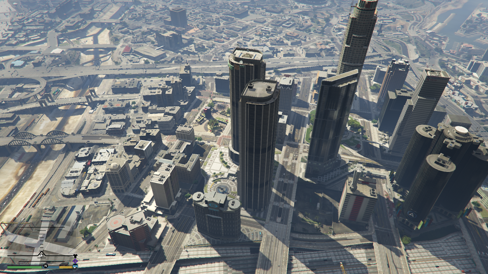
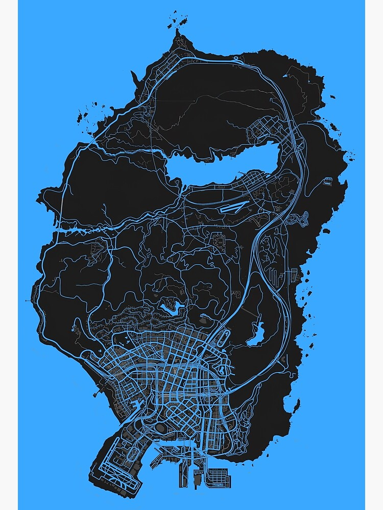

Bienvenidos a Los Santos

Los Santos, una extensa metrópolis llena de gurús de autoayuda, aspirantes a estrellas y famosos en decadencia, en su día la envidia del mundo occidental, lucha ahora por mantenerse a flote en una era de incertidumbre económica y reality shows baratos.
El Mapa de Los Santos

El mundo de GTA V es masivo, abarcando la ciudad de Los Santos y el condado de Blaine County. Con una superficie total que supera los 75 kilómetros cuadrados, este mapa ofrece una diversidad increíble de terrenos y locaciones.
Vehículos Destacados
GTA V cuenta con más de 250 vehículos diferentes, incluyendo coches, motos, aviones, helicópteros y barcos. Cada vehículo está detalladamente modelado y tiene sus propias características de manejo.
Misiones Principales
La historia principal de GTA V se desarrolla a través de 69 misiones, donde controlarás a los tres protagonistas en diferentes situaciones y atracos espectaculares.